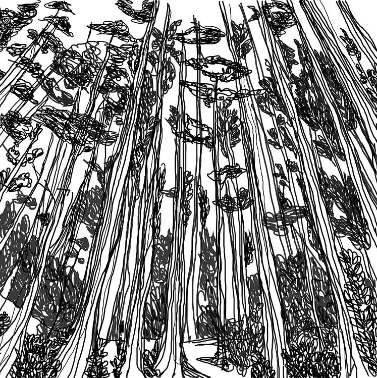
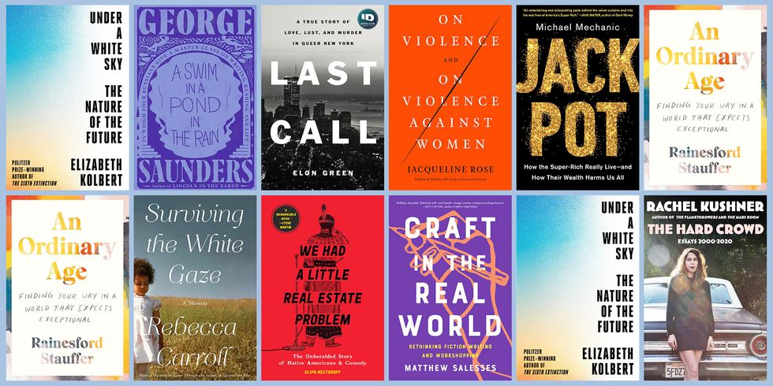

Hi, I am Vaishnavi Dubal. I am an MS-Information Systems student at Carl H. Lindner School of Business. By learning the most from Lindner’s Leadership team and Business Advisory Council, I will strive to strengthen my leadership qualities along the lines of strategic enterprise planning and tackle the progressive needs of our society. I am motivated to bring sustainable ideas in the field of IT Security and Process Modeling under the guidance of renowned professors. Here at UC, I am exposed to ample education with quality opportunities.
| Day | Time | Course | Course ID | Professor |
|---|---|---|---|---|
| Monday | 6.00 pm - 9.50 pm | Systems Analysis and Design | IS 7020 | Prof. Robert Rokey |
| Tuesday | - | - | - | - |
| Wednesday | 6.00 pm - 9.50 pm | Data Modelling | IS 7030 | Prof. Andrew Harrison |
| Thursday | - | - | - | - |
| Friday | 12.15 pm - 1.15 pm | Career Management | BA 7077 | Prof. Robert Rokey |
| Saturday | 9.00 am - 1.00 pm | Web Development with .net | IS 7012 | Prof. Michael Gattuso |
| Saturday | 1.00 pm - 4.00 pm | Statisitical Computing | BANA 6043 | Prof. Alex Wolfe |
I have curated few of my projects on Behance wherein I have tried to experiment with fonts and overall visuals. One of my illustration is attached below. 
I enjoy reading non-fiction books. I get to learn a lot of things and understand different perspective of varied subjects around me. Here is the list of non-fictional books I like. 